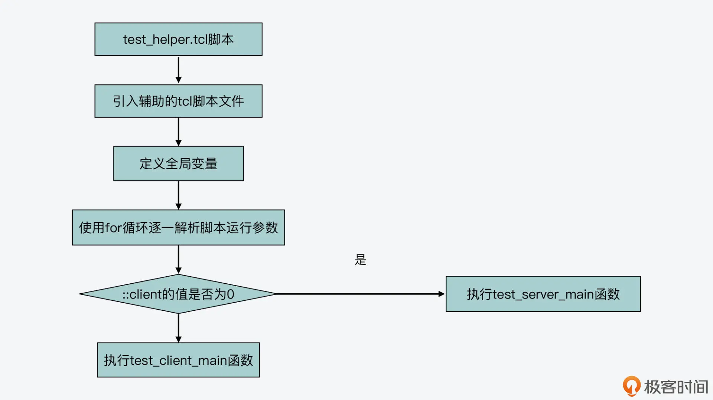
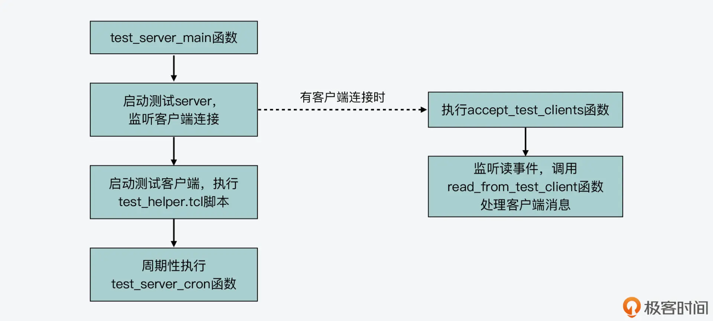
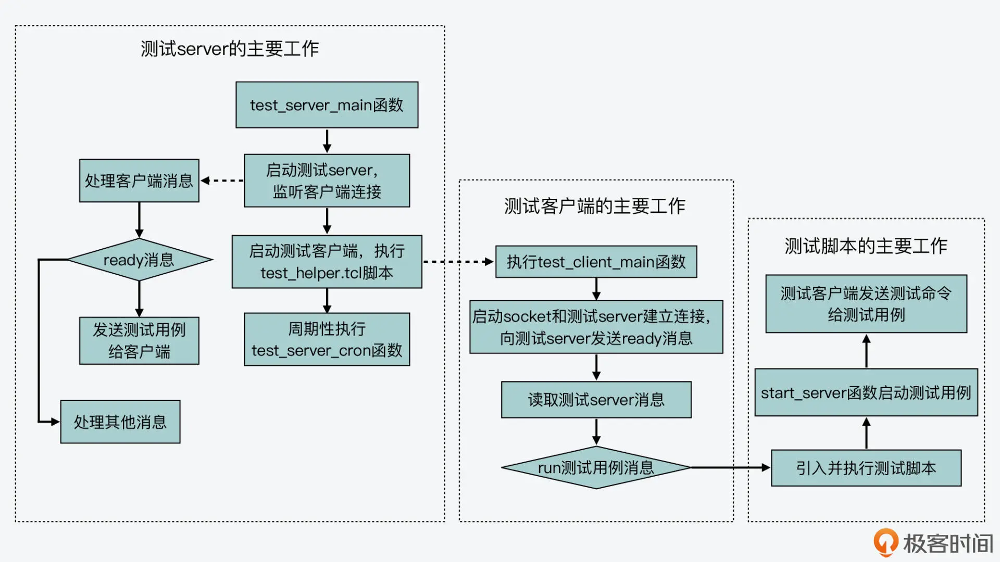

- 00 开篇词 阅读Redis源码能给你带来什么？.md
- 01 带你快速攻略Redis源码的整体架构.md
- 02 键值对中字符串的实现，用char还是结构体？.md
- 03 如何实现一个性能优异的Hash表？.md
- 04 内存友好的数据结构该如何细化设计？.md
- 05 有序集合为何能同时支持点查询和范围查询？.md
- 06 从ziplist到quicklist，再到listpack的启发.md
- 07 为什么Stream使用了Radix Tree？.md
- 08 Redis server启动后会做哪些操作？.md
- 09 Redis事件驱动框架（上）：何时使用select、poll、epoll？.md
- 10 Redis事件驱动框架（中）：Redis实现了Reactor模型吗？.md
- 11 Redis事件驱动框架（下）：Redis有哪些事件？.md
- 12 Redis真的是单线程吗？.md
- 13 Redis 6.0多IO线程的效率提高了吗？.md
- 14 从代码实现看分布式锁的原子性保证.md
- 15 为什么LRU算法原理和代码实现不一样？.md
- 16 LFU算法和其他算法相比有优势吗？.md
- 17 Lazy Free会影响缓存替换吗？.md
- 18 如何生成和解读RDB文件？.md
- 19 AOF重写（上）：触发时机与重写的影响.md
- 20 AOF重写（下）：重写时的新写操作记录在哪里？.md
- 21 主从复制：基于状态机的设计与实现.md
- 22 哨兵也和Redis实例一样初始化吗？.md
- 23 从哨兵Leader选举学习Raft协议实现（上）.md
- 24 从哨兵Leader选举学习Raft协议实现（下）.md
- 25 PubSub在主从故障切换时是如何发挥作用的？.md
- 26 从Ping-Pong消息学习Gossip协议的实现.md
- 27 从MOVED、ASK看集群节点如何处理命令？.md
- 28 Redis Cluster数据迁移会阻塞吗？.md
- 29 如何正确实现循环缓冲区？.md
- 30 如何在系统中实现延迟监控？.md
- 31 从Module的实现学习动态扩展功能.md
- 32 如何在一个系统中实现单元测试？.md
- 结束语 Redis源码阅读，让我们从新开始.md
32 如何在一个系统中实现单元测试？
今天这节课，我来和你聊聊 Redis 中的单元测试。
单元测试通常是用来测试一个系统的某个特定功能模块，通过单元测试，我们可以检测开发的功能模块是否正常。对于一个像 Redis 这样包含很多功能模块的系统来说，单元测试就显得更为重要了。否则，如果让整个系统开发完成后直接进行整体测试，一旦出现问题，就很难定位了。
那么，**对于一个包含多功能模块的系统来说，我们该如何进行单元测试呢？**Redis 源码中针对其主要功能模块，比如不同数据类型操作、AOF 和 RDB 持久化、主从复制、集群等模块，提供了单元测试的框架。
今天这节课，我就带你来学习了解下 Redis 实现的单元测试框架。通过学习今天的课程内容，你可以掌握如何使用 Tcl 语言开发一个单元测试框架，这些测试开发方法也可以用在你日常的开发测试工作中。
接下来，我们就先来看看 Redis 针对主要功能模块实现的单元测试框架。
Tcl 语言基础
通过课程的【第 1 讲】我们知道，在 Redis 源码目录中，专门有一个tests 子目录，这个 tests 目录就包含了 Redis 单元测试框架的实现代码。而在了解这个单元测试框架之前，你首先需要知道，这个框架是使用了 Tcl 语言来开发的。
Tcl 的全称是 Tool Command Language，它是一种功能丰富并且很容易上手的动态编程语言，经常会被应用在程序测试、运维管理等场景中。这里，我先给你介绍下 Tcl 语言的一些基础知识和基本操作，当然你也可以在 Tcl 语言的官网上学习它更加全面的开发知识。
- Tcl 程序执行
Tcl 语言本身属于解释性编程语言，所以，我们使用 Tcl 开发的程序不用编译和链接，它会对每条语句解释执行。
- 数据类型与基本操作
Tcl 语言的数据类型很简单，就是字符串。我们可以使用 set 关键字来定义变量，并且不需要指定变量的类型。同时，我们可以使用 puts 关键字来进行输出操作。
关于变量的使用，我们还需要了解两个知识点：一是，在输出某个变量的值时，我们需要使用$符号来引用该变量；二是，我们可以使用两个冒号开头来定义一个全局变量，比如::testnum就定义了一个全局变量。
下面的代码就展示了变量 a 的定义和输出，其中变量 a 的值被定义为“hello tcl”。
set a “hello tcl”
puts $a
如果你的电脑上安装了 tclsh 的命令解释器，你可以直接在命令行上运行 tclsh，这样就进入到了 Tcl 的命令解释执行环境中了。如果你没有安装，也可以在 Tcl 官网上下载安装源码包，进行编译安装。
然后，你可以把刚才介绍的两个语句在 tclsh 的执行环境中运行，如下所示：
tclsh //运行tclsh命令，需安装有tclsh命令解释器
//进入tclsh的执行环境
% set a "hello tcl"
hello tcl
% puts $a
hello tcl
好，刚才介绍的是 Tcl 设置和输出变量的基本操作，除此之外，我们还可以定义 proc 子函数，用来执行会经常用到的功能。以下代码就展示了一个 proc 子函数的定义：
proc sum {arg1 arg2} {
set x [expr $arg1+$arg2];
return $x
}
从代码中，你可以看到，proc 关键字后面跟着的是函数名称 sum。然后，函数参数 arg1 和 arg2 会使用花括号括起来表示。这个函数体是设置了变量 x 的值，而变量 x 的值等于 arg1 和 arg2 两个参数的和。
这里，你需要注意的是，在 Tcl 语言中，方括号可以将一条命令括起来，让该命令执行，并得到返回结果。所以，在刚才介绍的代码中，[expr $arg1 + $arg2]就表示要计算 arg1 和 arg2 的和。最后，这个函数会返回变量 x 的值，这里也是使用了$符号来引用变量 x。
现在，我们就了解了 Tcl 语言的一些基础知识和基本操作。接下来，我们来看下 Redis 中使用 Tcl 开发的单元测试框架。当然，在学习单元测试框架的过程中，我也会陆续给你介绍一些 Tcl 开发涉及的基础知识，以便你能理解测试框架的实现。
Redis 单元测试框架的实现
当我们使用 Redis 的单元测试框架时，我们要在 Redis 源码的 tests 目录这一层执行测试脚本 test_helper.tcl，如下所示：
tclsh tests/test_helper.tcl
从这里，你可以看到，单元测试框架的入口是在 test_helper.tcl 文件中实现的。因为 Tcl 是解释性语言，所以 test_helper.tcl 在执行时，会依次解释执行其中的语句。不过你要注意的是，这些语句并不是 proc 子函数，proc 子函数是要被调用执行的。下面呢，我们先来了解下 test_helper.tcl 执行时的基本操作。
test_helper.tcl 运行后的基本操作
我们可以在 test_helper.tcl 中查找非 proc 开头的语句，来了解这个脚本运行后的基本操作。
实际上，test_helper.tcl 运行后主要会执行以下三步操作。
第一步，引入其他的 tcl 脚本文件和定义全局变量
test_helper.tcl 脚本首先使用 source 关键字，引入 tests 目录下 support 子目录中的 redis.tcl、server.tcl 等脚本文件。
这些脚本文件实现了单元测试框架所需的部分功能，比如 server.tcl 脚本文件中，就实现了启动 Redis 测试实例的子函数 start_server，而 redis.tcl 脚本中实现了向测试用 Redis 实例发送命令的子函数。
而除了引入脚本文件之外，第一步操作还包括了定义全局变量。比如，测试框架定义了一个全局变量::all_tests，这个全局变量包含了所有预定义的单元测试。如果我们不加任何参数运行 test_helper.tcl 时，测试框架就会运行::all_tests定义的所有测试。此外，第一步定义的全局变量，还包括测试用主机 IP、端口号、跳过的测试用例集合、单一测试的用例集合，等等。
下面的代码展示了这一步执行的部分内容，你可以看下。你也可以在 test_helper.tcl 文件中，查看所有的引入脚本和定义的全局变量。
source tests/support/redis.tcl
source tests/support/server.tcl
…
set ::all_tests {
unit/printver
unit/dump
unit/auth
… }
set ::host 127.0.0.1
set ::port 21111
…
set ::single_tests {} //单一测试用例集合
了解了引入脚本和全局变量后，我们再来看下 test_helper.tcl 脚本执行的第二步操作，也就是解析脚本参数。
第二步，解析脚本参数
这一步操作是一个 for 循环，它会在 test_helper.tcl 脚本引入其他脚本和定义全局变量后，接着执行。
这个循环流程本身并不复杂，它的目的就是逐一解析 test_helper.tcl 脚本执行时携带的参数。不过想要理解这个流程，你还需要对 Tcl 语言的开发知识了解更多一些。比如，你要知道 llength 关键字是用来获取一个列表长度，而 lindex 是从一个列表中获取某个元素。
下面的代码展示了这个循环流程的基本结构，你可以看下其中的注释，这可以帮助你再多了解些 Tcl 语言开发知识。
for {set j 0} {$j < [llength $argv]} {incr j} { // 使用llength获取参数列表argv的长度
set opt [lindex $argv $j] //从argv参数列表中，使用lindex获取第j个参数
set arg [lindex $argv [expr $j+1]] //从argv参数列表中获取第j+1个参数
if {$opt eq {--tags}} { …} //处理“--tags”参数
elseif {$opt eq {--config}} { …} //处理“--config”参数
…
}
那么，在解析参数过程中，如果 test_helper.tcl 脚本带有“–single”参数，就表示脚本并不是执行所有测试用例，而只是执行一个或多个测试用例。因此，脚本中的全局变量::single_tests，就会保存这些测试用例，并且把全局变量::all_tests设置为::single_tests的值，表示就执行::single_tests中的测试用例，如下所示：
if {[llength $::single_tests] > 0} {
set ::all_tests $::single_tests
}
好了，在完成了对运行参数的解析后，test_helper.tcl 脚本的第三步就是启动实际的测试流程。
- 第三步，启动测试流程
在这一步，test_helper.tcl 脚本会判断全局变量::client的值，而这个值表示是否启动测试客户端。如果::client的值为 0，那么就表明当前不是启动测试客户端，因此，test_helper.tcl 脚本会来执行 test_server_main 函数。否则的话，test_helper.tcl 脚本会执行 test_client_main 函数。这部分逻辑如下所示：
if {$::client} { //当前是要启动测试客户端
if {[catch { test_client_main $::test_server_port } err]} { //执行test_client_main
…
}
else { //当前不是启动测试客户端
…
if {[catch { test_server_main } err]} { …} //执行test_server_main
}
}
我在这里画了一张图，展示了 test_helper.tcl 脚本执行的基本流程，你可以再回顾下。

其实，test_server_main 和 test_client_main 这两个函数都是为了最终启动测试流程的。那么，它们的作用分别是什么呢？下面我们就来了解下。
test_server_main 函数
test_server_main 函数的主要工作包括三步操作。
**首先，它会使用 socket -server 命令启动一个测试 server。**这个测试 server 会创建一个 socket，监听来自测试客户端的消息。那么，一旦有客户端连接时，测试 server 会执行 accept_test_clients 函数。这个过程的代码如下所示：
socket -server accept_test_clients -myaddr 127.0.0.1 $port
对于 accept_test_clients 函数来说，它会调用 fileevent 命令，监听客户端连接上是否有读事件发生。如果有读事件发生，这也就表示客户端有消息发送给测试 server。那么，它会执行 read_from_test_client 函数。这个过程如下所示：
proc accept_test_clients {fd addr port} {
…
fileevent $fd readable [list read_from_test_client $fd]
}
而 read_from_test_client 函数，会根据测试客户端发送的不同消息来执行不同的代码分支。比如，当测试客户端发送的消息是“ready”，这就表明当前客户端是空闲的，那么，测试 server 可以把未完成的测试用例再发给这个客户端执行，这个过程是由 signal_idel_client 函数来完成的，你可以仔细阅读下它的源码。
再比如，当测试客户端发送的消息是“done”时，read_from_test_client 函数会统计当前已经完成的测试用例数量，而且也会调用 signal_idel_client 函数，让当前客户端继续执行未完成的测试用例。关于 read_from_test_client 函数的不同执行分支，你也可以阅读它的代码来做进一步了解。
好了，在 test_server_main 函数的第一步，它主要是启动了测试 server。那么接下来的第二步，它会开始启动测试客户端。
test_server_main 函数会执行一个 for 循环流程，在这个循环流程中，它会根据要启动的测试客户端数量，依次调用 exec 命令，执行 tcl 脚本。这里的测试客户端数量是由全局变量::numclients决定的，默认值是 16。而执行的 tcl 脚本，正是当前运行的 test_helper.tcl 脚本，参数也和当前脚本的参数一样，并且还加上了“–client”参数，表示当前启动的是测试客户端。
下面的代码展示了刚才介绍的这个 for 循环流程，你可以看下。
for {set j 0} {$j < $::numclients} {incr j} {
set start_port [find_available_port $start_port] //设定测试客户端端口
//使用exec命令执行test_helper.tcl脚本（script），脚本参数和当前脚本一致，增加client参数，表示启动的是测试客户端；增加port参数，表示客户端端口
set p [exec $tclsh [info script] {*}$::argv \
--client $port --port $start_port &]
lappend ::clients_pids $p //记录每个测试客户端脚本运行的进程号
incr start_port 10 //递增测试客户端的端口号
}
这里，你要注意下，当 test_helper.tcl 脚本运行参数包含“–client”时，它在解析运行参数时，会把全局变量::client设置为 1，如下所示：
for {set j 0} {$j < [llength $argv]} {incr j} {
…
elseif {$opt eq {--client}} {
set ::client 1
…
}
这样一来，我们在刚才介绍的循环流程中，执行的这个 test_helper.tcl 脚本，就会根据全局变量::client的值，实际启动测试客户端，也就是会执行 test_client_main 函数，如下所示：
if {$::client} { //如果::client值为1，那么执行test_client_main函数
if {[catch { test_client_main $::test_server_port } err]} {…}
}
那么，在启动了测试客户端后，**test_server_main 函数的最后一步，就是每隔 10s 周期性地执行一次 test_server_cron 函数。**而这个函数的主要工作是，当测试执行超时的时候，输出报错信息，并清理测试客户端和测试 server。
好了，到这里，你就了解了测试 server 的执行函数 test_server_main，主要是启动 socket 等待客户端连接和处理客户端消息，以及启动测试客户端。下图展示了 test_server_main 函数的基本流程，你可以再回顾下。

那么接下来，我再带你来看下测试客户端对应的执行函数 test_client_main。
test_client_main 函数
test_client_main 函数在执行时，会先向测试 server 发送一个“ready”的消息。而刚才我提到，测试 server 一旦监听到有客户端连接发送了“ready”消息，它就会通过 signal_idle_client 函数，把未完成的单元测试发送给这个客户端。
具体来说，signal_idle_client 函数会发送“run 测试用例名”这样的消息给客户端。比如，当前未完成的测试用例是 unit/type/string，那么 signal_idle_client 函数就会发送“run unit/type/string”消息给测试客户端。你也可以看看下面的代码：
//从::all_tests中取出下一个未测试的用例，发送给客户端，发送消息为“run 测试用例名”
send_data_packet $fd run [lindex $::all_tests $::next_test]
那么，当 test_client_main 函数在发送了“ready”消息之后，就会执行一个 while 循环流程，等待从测试 server 读取消息。等它收到测试 server 返回的“run 测试用例名”的消息时，它就会调用 execute_tests 函数，执行相应的测试用例。
下面的代码展示了刚才介绍的 test_client_main 函数的基本执行过程，你可以看下。
proc test_client_main fd {
…
send_data_packet $::test_server_fd ready [pid] //向测试server发送ready消息
while 1 { //读取测试server发送的单元测试信息
…
set payload [read $::test_server_fd $bytes] //读取测试server的消息
foreach {cmd data} $payload break //cmd为测试server发送的命令，data为cmd命令后的消息内容
if {$cmd eq {run}} { //如果消息中有“run”命令
execute_tests $data //调用execute_tests执行data对应的测试用例
}
…}
然后这里，我们再来看下执行测试用例的 execute_tests 函数。这个函数比较简单，它就是根据传入的测试用例名，用 source 命令把 tests 目录下，该用例对应的 tcl 脚本文件引入并执行。最后，给测试 server 发送“done”的消息。
这部分代码如下所示：
proc execute_tests name {
set path "tests/$name.tcl" //在tests目录下找到对应测试用例文件
set ::curfile $path
source $path //引入并执行测试用例的脚本文件
send_data_packet $::test_server_fd done "$name" //测试用例执行完后，发送“done”消息给测试server
}
从这里我们能发现，单元测试框架在测试时，其实就是执行每个测试用例的 tcl 脚本文件，这也就是说，每个测试用例对应的测试内容在它的测试脚本中都已经编写好了，框架直接执行测试脚本就行。
那么，下面我们就来看看测试用例的实现。
测试用例的实现
Redis 单元测试框架中的测试用例有很多，在刚才介绍的全局变量::all_tests中都有定义。这里，我们以针对 String 数据类型的测试用例 unit/type/string 为例，来了解下框架中测试用例的开发实现。
unit/type/string 测试用例对应的测试脚本是 string.tcl。这个脚本首先会调用 start_server 函数，启动一个测试用 Redis 实例，而 start_server 函数是在 server.tcl 文件中定义的，你可以进一步阅读这个函数的源码了解它的实现。
然后，测试脚本会分别测试不同的测试项，它会调用 r 函数来给测试用的 Redis 实例发送具体的命令。比如，在下面的代码中，测试脚本就发送测试了 set 和 get 两个命令。
start_server {tags {"string"}} {
test {SET and GET an item} {
r set x foobar
r get x
} {foobar}
…
}
那么，这里发送测试命令的 r 函数（在 test_helper.tcl 文件中），它其实会通过 srv 函数（在 test_helper.tcl 文件中），从框架配置中获取名为::redis::redisHandle的函数。
而这个::redis::redisHandle函数，是在 redis.tcl 文件中先和::redis::__dispatch__函数进行了关联，表示由::redis::__dispatch__函数来执行。不过，::redis::__dispatch__函数会进一步调用::redis::__dispatch__raw__函数，来实际发送测试命令。
这里，你需要注意的是，刚才介绍的这三个函数名中都会带有 id 号。这个 id 号是脚本在运行过程中动态赋值的，并且它表示的是，测试命令要发送的测试用 Redis 实例的 socket 描述符。
下面的代码展示了::redis::redisHandle函数的关联定义，以及::redis::__dispatch__函数的基本定义，你可以看下。
proc redis {{server 127.0.0.1} {port 6379} {defer 0}} {
…
interp alias {} ::redis::redisHandle$id {} ::redis::__dispatch__ $id
}
proc ::redis::__dispatch__ {id method args} {
set errorcode [catch {::redis::__dispatch__raw__ $id $method $args} retval]
…
}
到这里，我们就知道最终实际发送测试命令的，其实是函数******::redis::dispatch__raw******，这个函数会按照 RESP 协议封装 Redis 命令，并发送给测试用的 Redis 实例，你可以看看下面的代码。
proc ::redis::__dispatch__raw__ {id method argv} {
set fd $::redis::fd($id) //获取要发送的测试用Redis实例的socket描述符
…
//按照RESP协议封装Redis命令
set cmd "*[expr {[llength $argv]+1}]\r\n" //封装命令及参数个数
append cmd "$[string length $method]\r\n$method\r\n" //封装命令名称
foreach a $argv { //封装命令参数
append cmd "$[string length $a]\r\n$a\r\n"
}
::redis::redis_write $fd $cmd //向测试用Redis实例发送测试命令
…}
这样一来，测试客户端就可以把测试用例中的命令发送给测试实例，并根据返回结果判断测试是否正常执行了。
我在画了一张图，展示了测试 server、测试客户端和测试用例的交互，以及它们在测试框架中各自的主要职责，你可以再整体回顾下。

小结
今天这节课，我们学习了 Redis 的单元测试框架。这个测试框架是用 Tcl 语言开发的，所以，在学习这个框架前，我们需要先掌握一些 Tcl 语言的开发基础知识。因为 Tcl 语言本身的数据类型比较简单，所以学习 Tcl 语言，主要就是了解它使用的众多的关键字命令。这也是你接下来可以重点去学习的内容。
而在单元测试框架的实现中，主要是包括了三个角色，分别是测试 server、测试客户端和测试用例，它们之间的关系是这样的：
- 测试 server 启动后，负责启动测试客户端，并和测试客户端交互，通过“run 测试用例名”消息向测试客户端发送测试用例。
- 测试客户端和测试 server 建立连接后，会向 server 发送“ready”消息。在接收到 server 发送的“run 测试用例名”消息后，客户端通过 execute_tests 函数引入并执行对应的测试脚本。
- 测试脚本会通过 start_server 函数，启动测试用的 Redis 实例，然后使用测试客户端提供的 r 函数向测试实例发送测试命令，而 r 函数实际会调用::redis::__dispatch__raw__函数，来完成命令发送。
最后，我也想再提醒你一下，如果你想要进一步深入学习和掌握 Redis 单元测试框架的话，一定要厘清刚才总结的测试 server、测试客户端和测试用例的关系，这样你才能理解整个测试过程是如何进行的。另外，因为 Tcl 语言的开发比较简单，所以你在学习了 Redis 单元测试框架后，也可以参考它实现自己的测试框架。
每课一问
Redis 源码中还有一个针对 SDS 的小型测试框架，你知道这个测试框架是在哪个代码文件中吗？
© 2019 - 2023 Liangliang Lee. Powered by Vert.x and hexo-theme-book.